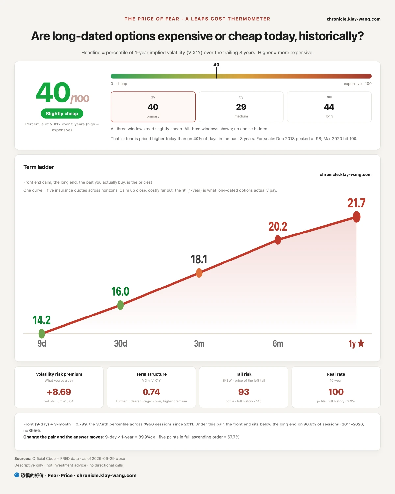
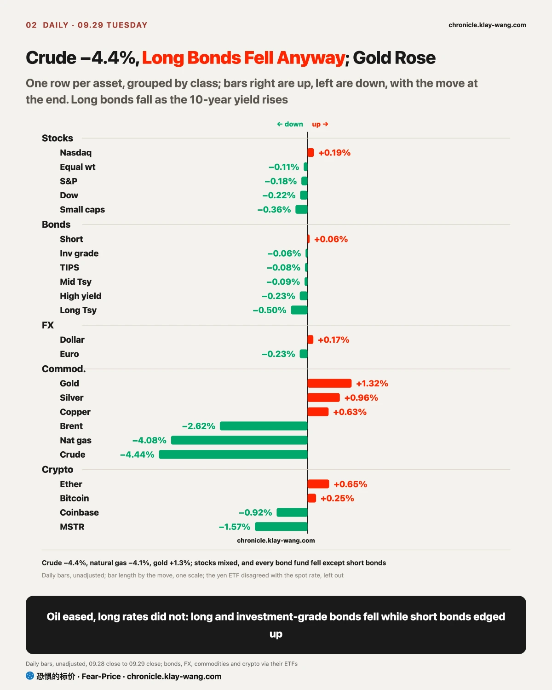
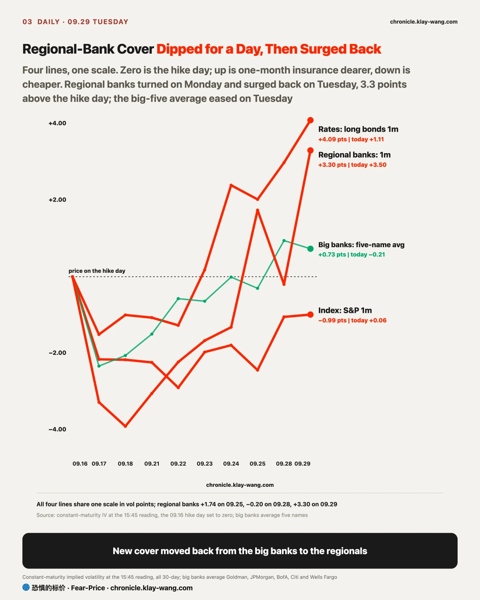
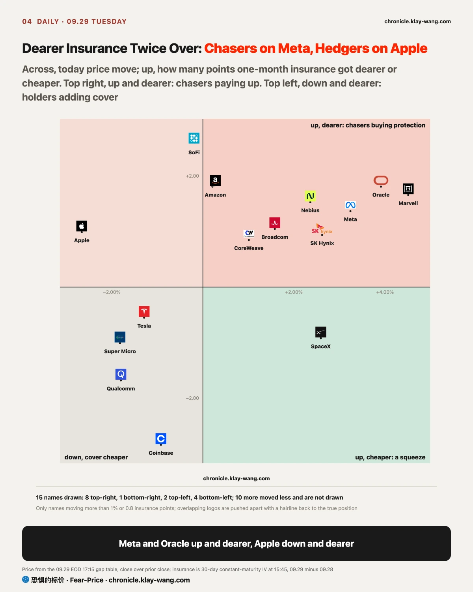
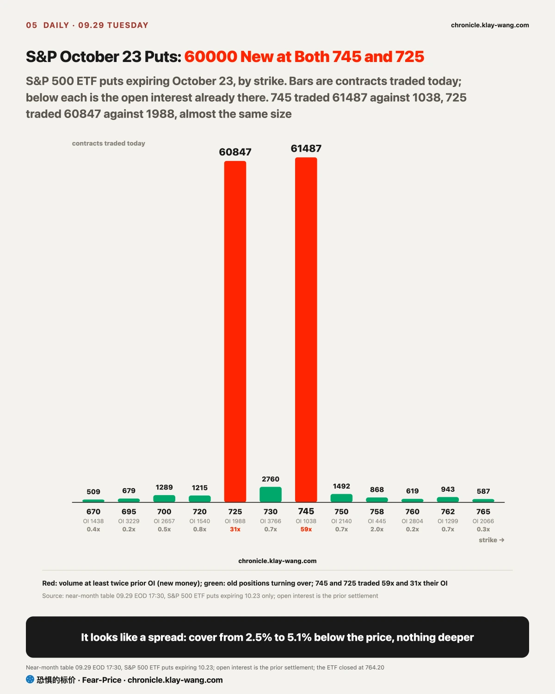

Fear-Price Index · Sep 29, 2026 · reading 40.3/100: one-year volatility VIX1Y at 21.67, in the 40.3th percentile of the past three years, where high means expensive. Daily ledger and definitions at chronicle.klay-wang.com · Please credit: Fear-Price Index
The Fear-Price Index scores what it costs to insure US stocks for a year against the past three years, out of 100; the higher the score, the dearer the cover. On Tuesday it went from 40.2 to 40.3, and one-month VIX from 16.07 to 16.04, barely a move. With consumer confidence at its lowest since 2014 and the 10-year yield at a new high, protection on a stock portfolio cost the same as on Monday. For you: a year of protection costs about the same as last week; the market has not yet priced rates into next year risk.
The K index is 1.972, below the Monday final of 2.139. The closer it gets to 1, the more people back their worry by buying protection. Fear and Greed fell from 34.4 to 31.6 while VIX was unchanged: people sound gloomier, but no more of them are paying for protection. At the Fear and Greed reading of today, VIX would need to rise above 31.6 for K to fall below 1. History at chronicle.klay-wang.com/kindex, the index itself at chronicle.klay-wang.com/fear-price.

The US 10-year Treasury yield rose to 5.26% on Tuesday, 2 basis points above Monday, matching the highest since June 2007; the 30-year rose to 5.59%, the highest since May 2004. The day should have cooled rates: the crude oil fund fell 4.4%, Gulf crude exports resumed, and the US Energy Department planned to release up to 40 million more barrels from reserves; September consumer confidence fell from 88.6 to 81.9, the lowest since 2014, and August job openings fell to the fewest since March.
The short end listened: the 2-year closed at 4.89%, 3 basis points below Monday. The 2-year tracks the Fed most closely; its fall means the market trimmed its bets on another hike. The long end did not. Lenders of 10- and 30-year money asked for extra compensation, with the bond market worried about US fiscal deficits and the amount of Treasury supply; hike bets eased and the long end rose anyway.
That worry has not reached companies. Over the week, one-month cover on the long bond fund rose from 10.7 to 16.1, about half again dearer; one-month cover on corporate bond funds got 60% to 70% dearer, yet the extra interest 14 AI-related bond issuers pay over Treasuries moved only from 57 to 60 basis points at the median. Bond funds are swinging more because rates drag them, not because the market is pricing defaults. For borrowers, mortgage rates follow the 10-year, and cheaper oil does not help; for anyone with spare cash, a one-year Treasury pays about 4.6% while long bond prices keep falling.
My call is that the rise in rates on Tuesday came from lenders of long money asking for more compensation, not from hike expectations. If before the jobs report on Friday the 2-year yield is back above 4.92% and rising more than the 10-year, hike expectations are driving rates again and this call does not stand.

The regional bank fund fell on heavy volume on Tuesday: its high came about ten minutes after the open, its low at midday, and it closed a quarter of the way up the range of the day on volume a fifth above Monday; that is someone selling, not just a lack of buyers. Its one-month insurance rose from 25.95 to 29.45, the biggest rise on the table, back above its one-year of 28.69.
Why them first? A steeper curve is normally good for banks that borrow short and lend long: deposit costs stay put while loan yields rise. The market did not price it that way. Regional banks usually hold a lot of long bonds; every step up in long rates adds to the paper loss on those bonds, and that was the step where Silicon Valley Bank failed in 2023. The average one-month insurance on the five big banks fell 0.22 points instead: the new cover that moved to the big banks on Monday moved back to the regionals, and October puts on the financials fund at strikes of 54 and 56 each traded over 30000 contracts; fund page at chronicle.klay-wang.com/t/XLF.en.
On September 25 we wrote that this rate shock would land first on regional banks, settling on October 2. Their insurance dipped below the one-year on Monday and crossed back on Tuesday, back on the side of that call. Another call, from September 23, said the rate shock had not reached credit, withdrawn if the average one-month insurance on six banks rose to 31.98; on Tuesday it was 31.95, 0.03 short, and it settles at the close on Wednesday.

In the same rate backdrop, stocks traded two ways. The ones with a new story were bought: just after 1 pm Eastern on Tuesday, at its developer conference, OpenAI launched Dots, an always-on agent aimed squarely at Muse, which Meta launched in early September; its top tier costs 500 dollars a month, five times the price of the top Muse tier, and OpenAI cut some usage on its 200-dollar plan. Meta brought Muse to small businesses the same day, and the market read the launch as Muse being a step ahead.
Meta traded in two halves. The morning was a higher open that got sold: it reached 727.50 right after the open, met sellers, and slid to the low of the day, 715.10, as the conference began. The afternoon was bought: twenty minutes into the conference it took back 727.50, the level sellers had defended in the morning; afternoon volume ran 60% above the morning, and it closed at 93% of the range of the day with no selling into the close. The money chased the move: calls expiring Wednesday, September 30, at a 730 strike traded 25727 contracts against open interest of only 1050, and one-month insurance got 1.37 points dearer. 727.50 turned from the morning ceiling into the afternoon floor; if it falls back below 727.50 on heavy volume on Wednesday, the afternoon run was pushed by one-day calls rather than real buyers. Stock page at chronicle.klay-wang.com/t/META.en.
The ones without a new story fell, in different ways. Apple opened below the Monday low, a gap down, its first minute was the high of the day, and it slid to close near the low; volume was about 15% above Monday and the last hour took a quarter of the day. Heavy volume, a close at the low and selling into the bell usually mean someone is unloading stock, and it started before the conference. A Bank of America report on Tuesday wrote that iPhones may still sell while the value in discovery, referral and transaction initiation goes to agents like Muse. Chips opened higher and were sold: overnight trading bounced first, buyers did not follow after the open, and the semiconductor fund closed in the bottom quarter of its range; Nvidia made its high minutes after the open and closed at its low on 70% of the Monday volume. Falling on light volume usually means nobody chasing rather than anyone dumping.
Micron reports after the close on Wednesday; it closed 1% below its open on only 87% of the Monday volume. On September 23 we wrote that memory falling on thin volume meant nobody taking the other side, withdrawn if either falls further on more than 1.3 times volume before the results; on Tuesday Micron and SanDisk both edged up on thin volume, so the call still stands. Excluding same-day expiries, money on calls is 2.4 times puts, and options price a move of about 6.7% either way through Friday; stock page at chronicle.klay-wang.com/t/MU.en.
S&P 500 ETF puts expiring October 23 traded 61487 contracts at a 745 strike against 1038 open, and 60847 at 725 against 1988 open. The sizes are almost equal, 2.5% and 5.1% below the price, so it looks like one spread. The trade record does not show who bought and who sold: if it was a buyer, it covers the slice from 2.5% to 5.1% below the price and nothing deeper, cheaper than a single put. Before PCE and the jobs report, index put volume stays heavy; strike-by-strike open interest at chronicle.klay-wang.com/t/SPY.en.
On Monday we wrote that 190000 Nasdaq puts moving from the December 660 strike to the March 670 strike were a roll, not new bearish money. At settlement on Tuesday morning the December strike fell from 200912 to 26728 contracts and the March strike rose from 5397 to 195642, a change of 170000 to 190000 on each side: the call stands.
If you hold regional banks or financials: every step up in long rates adds to the paper loss on the long bonds they hold, and short-term protection on regional banks is dearer than one-year again. The pressure is over only when their one-month insurance falls back below one-year before Friday.
If you hold bonds: short rates are falling and long rates rising, so short bonds are steadier than long ones; corporate bond funds swing with rates while the extra interest companies pay has barely moved.
If you hold big platforms like Meta or Apple: money is picking names; Meta rose while its insurance got dearer, chasers paying up; Apple fell while its insurance got dearer, holders adding cover. Wednesday is the first full day after the Dots launch; watch whether Meta holds 727.50.
If you hold chip or memory stocks: sold after a higher open on light volume, few buyers stepping in; options price Micron results on Wednesday at a move of about 6.7% either way through Friday.